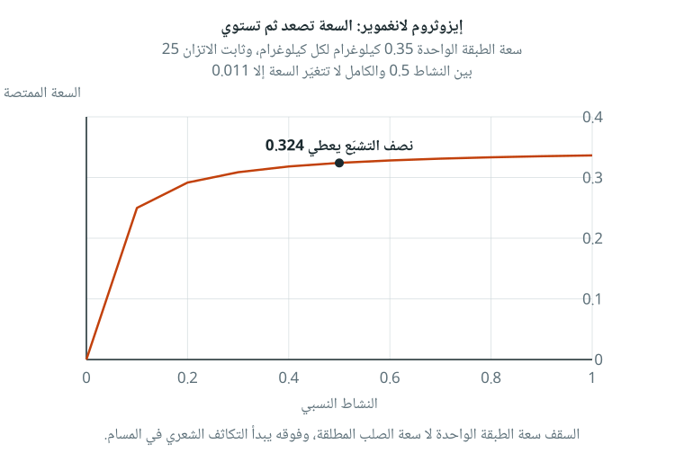

إيزوثروم الامتزاز
Adsorption Isotherm
علاقة كمية المادة الممتزّة على سطح صلب بضغطها أو تركيزها عند حرارة ثابتة، تصفها نماذج لانغموير وفرويندليش وتُستخدم لحساب سعة المجفّفات والفحم المنشَّط.
إيزوثروم الامتزاز منحنى يربط كمية المادة الملتصقة على سطح صلب بالضغط الجزئي لتلك المادة في الطور الغازي، عند درجة حرارة ثابتة. كلمة إيزوثروم تعني حرارة ثابتة، وهذا شرط القياس لا زينة: تغيير الحرارة يغيّر المنحنى كله.
الامتزاز التصاق جزيئات بسطح، وهو ليس امتصاصًا: المادة الممتزّة تبقى على السطح ولا تدخل في حجم المادة الصلبة. يحدث لأن سطح الصلب يملك طاقة حرة أعلى من داخله، فترتبط الجزيئات عنده لتخفيض تلك الطاقة. في الأنظمة الفيزيائية ترتبط بقوى ضعيفة وتنفصل بسهولة، وفي الأنظمة الكيميائية ترتبط بروابط حقيقية وتحتاج حرارة لفكّها.
أشهر نموذجين: لانغموير، ويقوم على سطح موحّد وطبقة واحدة وسيطرة كاملة، فيبلغ السعة سقفًا واضحًا؛ وفرويندليش، وهو تعبير تجريبي بلا سقف، يصف الانحناء المبكر جيدًا ويفشل عند الضغوط العالية. تُستخدم هذه المنحنيات في تصميم مجفّفات هواء بسيليكا جل، وفي حساب عمر مرشّح فحم، وفي تقدير كمية الماء التي يتحمّلها وسيط امتزاز في دورة تبريد.
الآلية
كيف يحدث الأمر على مستوى الجسيمات أو المتغيّرات المباشرة
على السطح عدد محدود من المواقع النشطة. تمتزّ الجزيئات باحتمال يتناسب مع الضغط الجزئي وعدد المواقع الفارغة، وتنفصل باحتمال يتناسب مع عدد المواقع المشغولة. يستقرّ الغلاف عند تساوي المعدلين، فتنشأ علاقة غير خطية بين الكمية الممتزّة والضغط: عند الضغوط الصغيرة يكون الانحدار حادًّا لأن المواقع كثيرة ومتاحة، ثم يستوي المنحنى مع امتلائها. هذه الحركية المتعاكسة هي جوهر النموذج، وليست افتراضًا شكليًّا: كلما ارتفعت الحرارة زاد احتمال الانفصال، فانخفضت الكمية الممتزّة عند الضغط نفسه، ولهذا يعمل التجفيف على الحرارة لا على الضغط وحده.
الأرقام والوحدات
العلاقات والوحدات والنطاقات العددية التي تسند الشرح
صيغة لانغموير: q = q_max·K·a ÷ (1 + K·a)، حيث a هي النشاط النسبي p/p₀. باختيار q_max = 0.35 kg/kg وK = 25 ينتج: عند a = 0.10 تكون السعة 0.250 kg/kg، وعند a = 0.50 ترتفع إلى 0.324 kg/kg، وعند a = 1.00 تقترب من 0.335 kg/kg. الفرق بين النصف والكامل لا يتجاوز 0.011 kg/kg، وهو ما يفسّر لماذا يُصمَّم المجفّف على منحنٍ مسطّح ويُقاس بالنشاط النسبي لا بالماء الكلي. وعند 20 °م (ضغط تشبّع 2.34 kPa) يعطي ضغط 2 kPa نشاطًا 0.855 وسعة 0.334 kg/kg، بينما يعطي الضغط نفسه عند 40 °م، حيث ضغط التشبّع 7.38 kPa، نشاطًا 0.271 وسعة 0.305 kg/kg.
الفرق الدقيق
المفهوم الملتبس الذي يُخلَط به، وأين ينفصلان
الخلط الأول بين الامتزاز والامتصاص: الأول التصاق سطحي، والثاني نفاذ إلى داخل الحجم، وسعة الأول تُقاس بمساحة السطح وسعة الثاني بكتلة المادة. الثاني بين إيزوثروم الامتزاز ومنحنى التوزيع بين طورين، فالأول سطح صلب والثاني سائلان. الثالث أن q_max في لانغموير ليست السعة القصوى للصلب في كل الظروف: هي سعة الطبقة الواحدة على المواقع المتاحة، وقد تتجاوزها المادة عند الضغوط العالية بتكوين طبقات إضافية أو تكاثف شعري. الرابع أن فرويندليش بلا سقف رياضي، فلا يجوز استخدامه للتنبؤ بسعة التشبّع لأن المنحنى يظل صاعدًا مع الضغط.
حدود التعريف
أين ينكسر التعريف أو النموذج وما الذي لا يفسّره
يفترض لانغموير سطحًا متجانسًا ومواقع متساوية الطاقة وبلا تفاعل بين الجزيئات الممتزّة. أسطح سيليكا جل والفحم المنشَّط غير متجانسة: فيها مسام بأقطار مختلفة ومواقع عالية الطاقة تعمل أولًا. لذلك تظهر منحنيات من النوع الرابع في تصنيف IUPAC بانحناء ثانٍ ناتج عن التكاثف الشعري، ولا يصفها لانغموير. كما يظهر التخلف عند الطرد: منحنى الامتزاز لا يطابق منحنى الطرد، وهذا وحده ينقض فرض التوازن. ولا يصلح النموذج لمخاليط فيها تنافس بين الماء وبخار عضوي، والذي يحدث في التطبيقات الحقيقية غالبًا.

| الكمية | القيمة | المصدر |
|---|---|---|
| سعة الطبقة الواحدة q_max في النموذج | 0.35 كيلوغرام ماء/كيلوغرام مادة جافة | [1] |
| السعة عند النشاط النسبي 0.10 | 0.250 كيلوغرام/كيلوغرام | [1] |
| السعة عند النشاط النسبي 0.50 | 0.324 كيلوغرام/كيلوغرام | [1] |
| ضغط بخار الماء المشبع عند 20 °م | 2.34 كيلوباسكال | [2] |
| ضغط بخار الماء المشبع عند 40 °م | 7.38 كيلوباسكال | [2] |
المصادر
- 1 NIST Data Resources for Adsorption Science and Technology — NIST. adsorption.nist.gov/ · اطُّلع عليه 2026-11-16
- 2 Liquids — Vapor Pressures — The Engineering ToolBox. www.engineeringtoolbox.com/vapor-pressure-d_312.html · اطُّلع عليه 2026-11-16
استشهد بهذا المصطلح
الصيغتان مبنيتان من بيانات الصفحة نفسها: العنوان والتاريخ ورابط النسخة المنشورة.
إيزوثروم الامتزاز — Adsorption Isotherm. (2026). ديوان المعرفة — انفراد. https://infiradev.com/diwan/terms/adsorption-isotherm.html
@misc{adsorption-isotherm2026,
title = {إيزوثروم الامتزاز},
titleaddon = {Adsorption Isotherm},
howpublished = {{ديوان المعرفة — انفراد} — مرجع علمي عربي},
year = {2026},
url = {https://infiradev.com/diwan/terms/adsorption-isotherm.html},
urldate = {2026-11-16},
note = {مراجعة علمية: مراجعة آلية — ديوان المعرفة (روابط المصادر + عقد المحتوى + وجود الرسم) 2026-11-16}
}
راجعه: مراجعة آلية — ديوان المعرفة (روابط المصادر + عقد المحتوى + وجود الرسم) 2026-11-16 · 2026-11-16 · آخر تحديث 2026-11-16